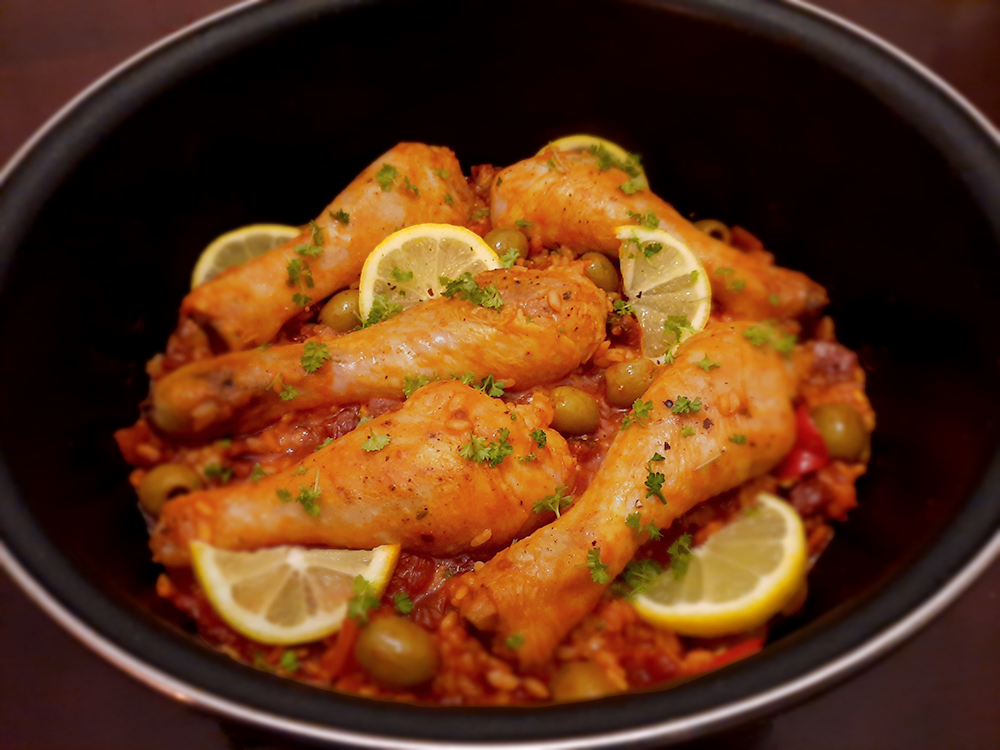

chorizosoep

bami met spinazie
japanse beef teriyaki

chili sin carne met guacamole

avocado salade

amerikaanse caesar salade

italiaanse caponata

coq au vin

kip in de hoed

kokossoep

franse bouillabaisse

spaanse paella

Bereidingsduur: 90 minuten
Aantal personen: 4
Ingrediënten:
125 gram chorizo worst
20 olijven
1 rode paprika
140 gram zongedroogde tomaten
1 blokje kippenbouillon
2 eetlepels tomatenpuree
20 gram peterselie
1 citroen
550 gram kippenpootjes
naar smaak peper en zout
1 ui
250 gram risotto rijst
200 ml witte wijn
1 theelepel paprikapoeder
1 teentje knoflook
125 gram chorizo worst
20 olijven
1 rode paprika
140 gram zongedroogde tomaten
1 blokje kippenbouillon
2 eetlepels tomatenpuree
20 gram peterselie
1 citroen
550 gram kippenpootjes
naar smaak peper en zout
1 ui
250 gram risotto rijst
200 ml witte wijn
1 theelepel paprikapoeder
1 teentje knoflook
Instructies:
1. Kruid de drumsticks met zout en peper. Snijd ondertussen de ui en pers de knoflook.
2. Bak de drumsticks in een scheutje olijfolie in een paella- of braadpan tot deze goudbruin zijn.
3. Ondertussen snijd je de paprika en tomaat grof en de chorizo in halve plakjes. Laat de drumsticks uitlekken op wat keukenpapier.
4. Fruit de ui, paprika, knoflook en chorizo tot de knoflook goudgeel begint te kleuren.
5. Voeg rijst toe aan de pan, roer om tot het glanst en een laagje olie om de rijst zit. Voeg het bouillonblokje, de tomatenpuree, de wijn en wat water toe. Roer goed door tot het kookt, zet daarna de pit laag. Er mag een klein laagje water in de pan staan.
6. Voeg paprikapoeder, zongedroogde tomaten en de drumsticks toe. Snipper de helft van de peterselie erboven. Verdeel de olijven erboven en dek de pan af.
7. Neem een warmhoudplaatje en laat de pan hier 45 minuten op laagste stand zachtjes garen. Roer af en toe door de pan.
8. Snijd schijfjes citroen en leg deze samen met de rest van de peterselie op de paella. Klaar om te smullen!
1. Kruid de drumsticks met zout en peper. Snijd ondertussen de ui en pers de knoflook.
2. Bak de drumsticks in een scheutje olijfolie in een paella- of braadpan tot deze goudbruin zijn.
3. Ondertussen snijd je de paprika en tomaat grof en de chorizo in halve plakjes. Laat de drumsticks uitlekken op wat keukenpapier.
4. Fruit de ui, paprika, knoflook en chorizo tot de knoflook goudgeel begint te kleuren.
5. Voeg rijst toe aan de pan, roer om tot het glanst en een laagje olie om de rijst zit. Voeg het bouillonblokje, de tomatenpuree, de wijn en wat water toe. Roer goed door tot het kookt, zet daarna de pit laag. Er mag een klein laagje water in de pan staan.
6. Voeg paprikapoeder, zongedroogde tomaten en de drumsticks toe. Snipper de helft van de peterselie erboven. Verdeel de olijven erboven en dek de pan af.
7. Neem een warmhoudplaatje en laat de pan hier 45 minuten op laagste stand zachtjes garen. Roer af en toe door de pan.
8. Snijd schijfjes citroen en leg deze samen met de rest van de peterselie op de paella. Klaar om te smullen!
Tip: Vervang de chorizo of de kip eens door cocktailgarnalen en de paprika door gegrilde paprika's. In plaats van kipkluifjes kun je ook kipfilet gebruiken.